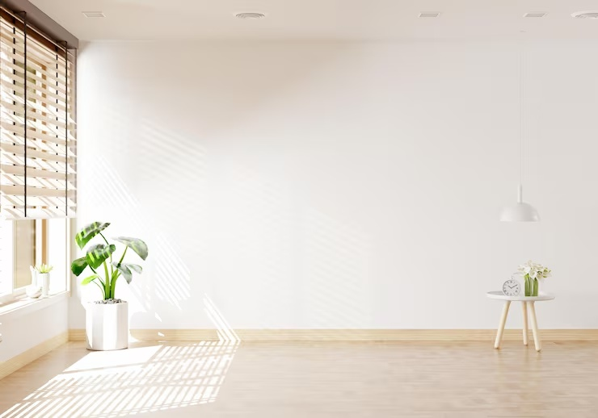
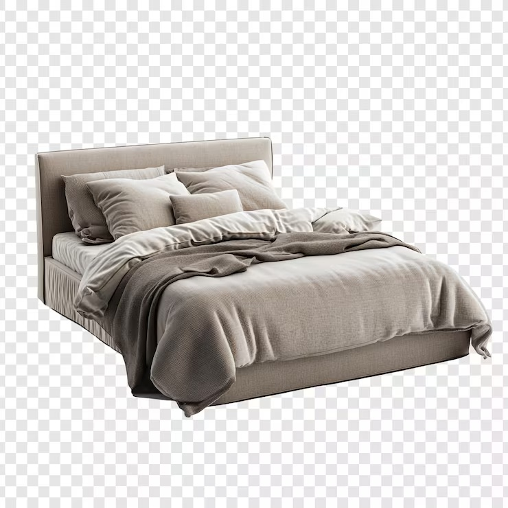
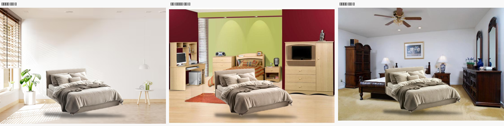
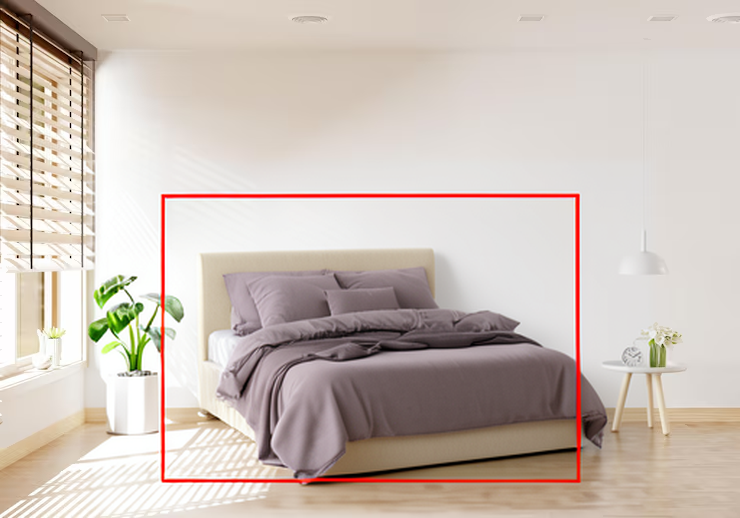
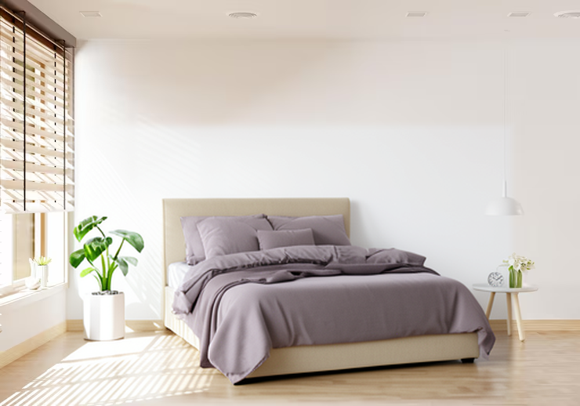
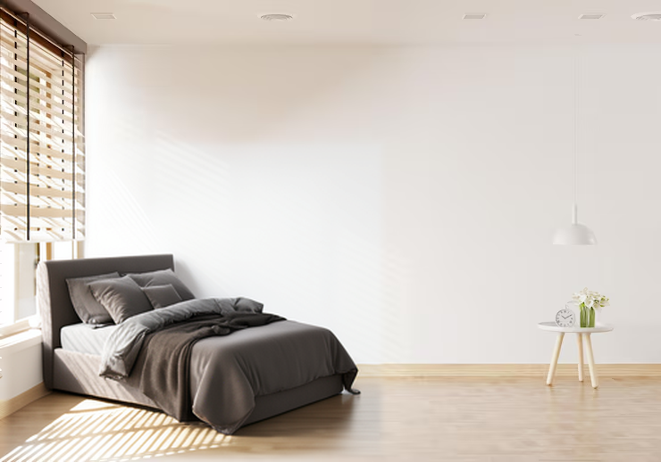
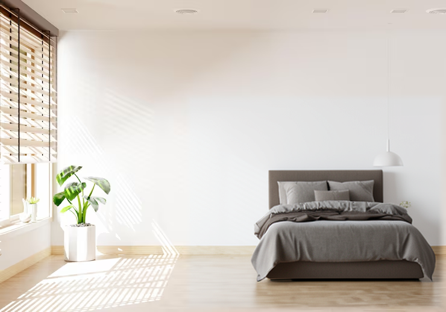

방 사진 기반 가구 시각화
내 방에 가구를
배치한 모습
여러 참조 이미지를 사용하는
로컬 생성형 편집 시스템
방 사진 + 가구 사진 + 원하는 위치
중간 발표 · 실제 출력 확인, 품질 평가 전
문제와 사용자 입력
가구 사진만으로는
내 방의 배치 모습을 알기 어렵습니다


사용자가 원하는 답
이 위치에 놓았을 때어떻게 보일까요?색감, 시점과 접지감을
함께 살펴볼 수 있는 이미지
실제 사용자 Sample 입력입니다. 오른쪽 침대의 체크무늬는 원본 이미지에 포함된 배경입니다.
성공 기준과 범위
자연스러움과 원본 보존을
각각 검증합니다
방에 어울리는 가구시점, 바닥 접지와 빛 방향을 사람이 평가합니다.
사용자가 지정한 위치목표 박스와 실제 가구의 위치를 비교합니다.
바뀌지 않는 주변 픽셀편집 영역 밖의 원본과 최종 PNG를 비교합니다.
콘셉트 시각화
제품의 정확한 동일성,
실측 치수와 3D 충돌 여부는
보증하지 않습니다.
이전 방식의 관찰
누끼 합성에는
촬영 시점을 바꾸기 어려운 한계가 있습니다

기존 구현
누끼와 기하 변환, 조명·그림자 합성
남은 문제
사진에 없는 옆면과 새로운 시점을 만들기 어렵습니다.
출처: 기존 DEVLOG §21·§26와 evidence/14_촬영각도_불일치.png. 새 모델의 결과가 아닙니다.
새 생성 구조
방·가구 참조와 위치 좌표로
장면 후보를 생성합니다
- 참조 1깨끗한 방
방 구조, 촬영 시점과 조명
- 참조 2가구
종류, 색과 주요 형태
- 위치 지시0~1 정규화 좌표
배치 박스를 프롬프트에 적습니다.
klein 4B
정규화 좌표와 참조 역할을
프롬프트에 명시합니다.
예시: [0.35, 0.38, 0.76, 0.88]
첫 실험에서 빨간 박스 참조의 안내선이 결과에 남아 기본 입력에서 제외했습니다. marker·map 참조 추가는 CLI 비교 실험으로 남깁니다.
편집 범위 제어
편집 영역 밖은
원본 픽셀로 복원합니다
확장 영역 안
가구와 그림자를 합성합니다.
페더링은 경계 안쪽에만 둡니다.
확장 영역 밖
원본 방의 RGB 값을 그대로 복사합니다.
앞에 남길 물체
선택한 브러시 영역을 원본으로 복원합니다.
보존은 후처리로 제한합니다. 영역을 너무 좁히면 그림자나 가구가 잘리고 경계가 보일 수 있습니다.
사용 흐름
입력부터 결과 확인까지
- 1사진 업로드
방과 가구 사진을 준비합니다.
- 2위치 지정
목표 박스를 그리고 필요하면
앞에 남길 물체를 칠합니다. - 3로컬 생성
시드와 설정을 기록하고
장면 후보를 생성합니다. - 4결과 검토
원본과 결과를 비교하고
PNG와 실행 기록을 저장합니다.
메모리 부족, 생성 중단과 품질 문제를 구분합니다.
완료된 출력이 있어야 생성 성공으로 표시합니다.
실행 환경
Mac에서 먼저 검증하고
Colab GPU 경로를 준비합니다
| 항목 | 우선: Mac M5 16GB | 보조: Colab NVIDIA GPU |
|---|---|---|
| 추론 구현 | mflux, MLX 이미지 편집 CLI | Diffusers Flux2KleinPipeline |
| 메모리 대응 | 4비트 양자화 512×352, 4스텝으로 검증 | CPU offload 선택적 양자화 |
| 실측·검증 | 캐시 사용 12.332초 MLX 피크 메모리 4.25GB* | GPU 종류·VRAM·RAM 실제 생성은 미검증 |
| 현재 상태 | 생성·좌우 배치 응답 확인 품질의 사람 평가 전 | 실행 코드·노트북 준비 Colab에서 직접 실행 예정 |
* 4.25GB는 LEFT 실험의 MLX 런타임 로그 값이며 전체 프로세스·시스템 메모리가 아닙니다. 설치·최초 다운로드는 인터넷이 필요합니다.
직접 구현하는 기여
배치 제어와 보존 계약을
모델 실행 시스템에 결합합니다
가중치 자체의 개발·학습을
프로젝트 성과로 주장하지 않습니다.
- 배치 입력 처리
- 박스 좌표, 참조 표시와 프롬프트 구성
- 원본 보존 후처리
- 영역 제한, 내부 페더링과 전경 보호
- 실행과 기록
- 백엔드 연결, 오류 표시와 재현 설정 저장
- 통제 비교 평가
- 같은 입력·위치의 비교와 실패 원인 분류
모델 호출 없는 핵심 단위 검사 6개와 Gradio 앱 실행을 확인했습니다. 통제된 품질 평가는 진행 전입니다.
평가 설계
같은 입력과 위치로
이전 방식과 새 최종 출력을 비교합니다
비교할 조건
A. 이전 누끼 합성
B. 두 참조의 새 생성 후보
C. 영역 보존 후 최종 합성
D. 위치 안내 참조를 추가한 생성
고정할 설정
입력, 목표 박스, 해상도와 시드
실패·재시도까지 모두 기록
프로그램 검사
영역 밖 변화 픽셀 수 = 0
보호 영역 변화 픽셀 수 = 0
처리 시간과 메모리는 실측
블라인드 사람 평가
시점, 접지, 가구 특징,
위치 준수와 경계·가림을 평가
첫 단계는 Sample 한 쌍입니다. 이후 개발용 6쌍·홀드아웃 6쌍, 평가자 3명 이상을 목표로 합니다. 아직 확보·평가한 수가 아닙니다.
현재 확인 상태
수정한 두 참조 출력에서는
빨간 안내선이 남지 않았습니다


두 출력 모두 잠금 영역 픽셀 일치 검사 통과. 이미지 생성 완료와 제품 동일성·자연스러움의 검증은 구분합니다.
위치 응답과 다음 검증
같은 입력으로
왼쪽·오른쪽 배치 응답을 확인했습니다


동일 입력·설명·시드42·512×352. 제품 형태 변화와 기존 탁자 가림은 미해결입니다. 다음: 홀드아웃·사람 평가·CUDA 실행.